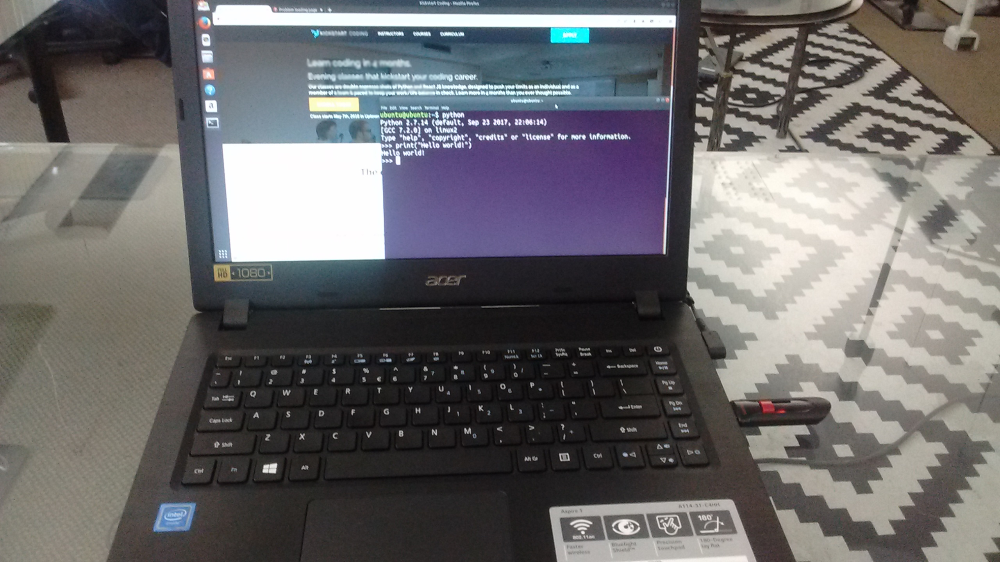

Updated version of this article
The Acer Aspire 1 (A114-31-C4HH) is a great and super affordable machine for running a Linux-based operating system. At only $209 new, its cheaper than many Chromebooks, and is the only computer at this pricepoint to have a full 1920x1080 HD display. It's very easy to install Ubuntu Linux, and while it's memory is limited, it is completely usable even with Ubuntu's heavier-weight GNOME-based DE.
Specs
Display: 14 in, 1920x1080
Storage: 32 GB eMMC SSD
Memory: 4 GB RAM
CPU: Celeron N3450, four cores at 1.1 - 2.2 GHz
Battery: 2-cell Li-Ion Battery -- it claims "Up to 9 Hours Battery Life", but on Linux doing a variety of tasks (web browsing, image editing) I could only get in the vicinity of 5 hours.
By far, the biggest selling point to me was the display. I can find no other laptop at this pricepoint with a full HD display.
I was originally somewhat nervous about buying it for Linux since there was scant information about compatibility. Fortunately for me, everything 100% works out of the box. All the possible pain points (suspend, wireless, touchpad issues, etc) all seem to completely work without any extra configuration. After a full install of Ubuntu 17.10, I did nothing else, everything was perfectly configured already.

Installation (Prepping the BIOS)
The steps I followed to wipe Windows and succesfully install Ubuntu Linux is 1) prep the BIOS by disabling UEFI / Secure Boot, then 2) follow a normal graphical installation. It was quite simple, only slightly more complicated than other hardware.
Exact steps as follows:
Hard shut off (Hold power for 5+ seconds)
Boot holding
<F2>to BIOS<Right> <Right> <Right>to "Security" tabHit
<Enter>to set supervisor passwordI used the (insecure) password of "admin". So I typed in
"admin"<Enter>"admin"<Enter><Right>to Boot tab<Enter> <Down> <Enter>to disable Secure Boot<Left> <Left> <Left>to Main tab<Down> <Down> <Down>to F12 Boot Menu<Enter> <Down> <Enter>to enable F12 Boot Menu<F10> <Enter>to Save and ExitIMMEDIATELY hold down
<F12>to boot to into Boot Device SelectorSelect USB (
<Down> <Enter>)
At this point, it should allow normal Ubuntu installation. Choose whatever menu items allow you to install Ubuntu, then follow the on-screen graphical installer. You'll want to wipe Windows when the option comes up (make sure you have no data you want to keep!), since the 32GB is barely enough for one OS, let alone two.
Review of Ubuntu Linux on Acer Aspire 1
Right now, it's my top recommended Linux machine. At such a low price point, it's more than capable of web development, web usage, and the like. I've tested full screen 1080p YouTube, and normal browsing on some graphically intense sites, and so far everything has been flawless out of the box. Even using a heavy-weight DE like stock GNOME, the CPU is more than enough for fast and frustration-free average usage.
The 1 caveat: only 4 GB is limiting. When using stock GNOME, more than a half-dozen Chromium tabs or applications running, you will start "swapping" which causes slow downs -- though on the eMMC the slow downs are nothing like what they used to be on hard-disks (I was actually pleasantly surprised at how cleanly it swapped). Just idling with GNOME, I noticed over 1 GB of that precious RAM being used. If you want a little more elbow room, I'd recommend using a less flashy DE like XFCE or LXDE.
However, for most usage, the gorgeous crisp display, sleek form factor, various awesome features (one of the few laptops of the style that have an eithernet port!), great Linux compatibility, and extremely low price point make the 2017 Acer Aspire 1 the best low-priced Linux laptop hardware currently on the market. I've been using as my primary machine for the past 5 days, and so far I recommend it without reservation as the best laptop at the price point.
NOTE: Don't confuse this with the Acer One, which is a completely different netbook-style model from several years ago. The A114-31-C4HH is the one I'm referring to.